Digitization (Print/Image)
Guidelines for digital capture & post processing using the Nikon D810 digitization kit
Equipment list
-
Nikon D810 camera body 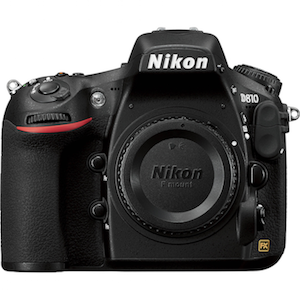
- Camera lenses
- variable focus lens (24 - 120mm)
- 60mm prime lens (Note: this is the preferred reproduction lens) 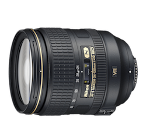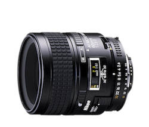
-
Camera battery charger 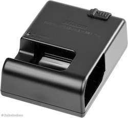
-
Lighting kit: flash heads, charger, battery pack, extra batteries, case 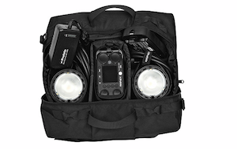
-
Lighting kit extension cables (2) 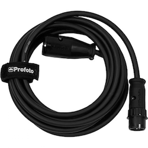
-
Softboxes (2) 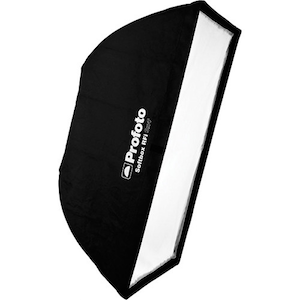
-
Speedrings (4) Note: Only 2 are needed; the other 2 are backups in case of breakage. 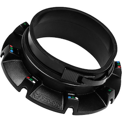
-
Light stands (2) - These are reverse stands, so they will look like 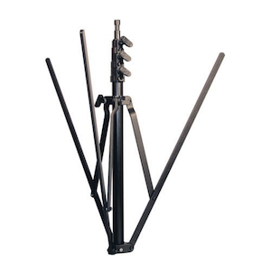 until they are fully extended, then they will look like 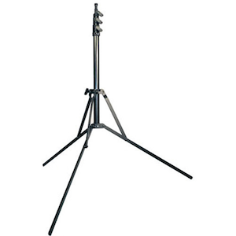
-
Wireless remote which controls the flash. Requires 2 AAA batteries. 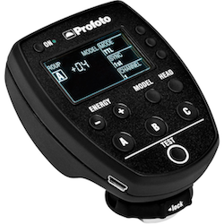
-
USB3 cable for tethering to computer 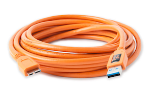
-
Tripod with 90-degree capable center column 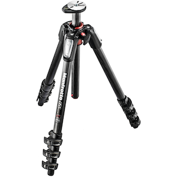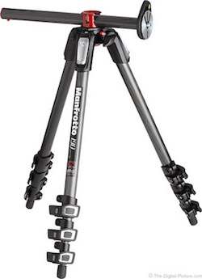
-
Tripod head and quick release plate 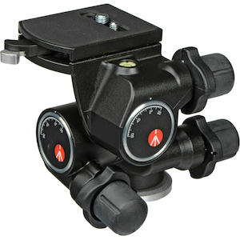
-
Cable shutter release 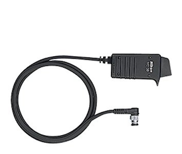
-
XRite Color Checker reference target and software 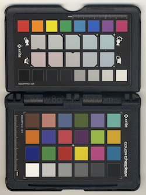
-
Memory cards 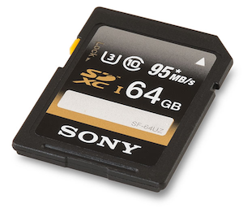
- Equipment manuals
- Nikon D810
- Nikon 60mm lens
- Profoto B2 Location Kit
- Manfrotto Geared Tripod Head 410
- Manfrotto Carbon Fiber Tripod with Center Column MT055CXPRO
-
Dust removal tool - Rocket Air Blaster 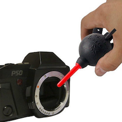
-
Gaffer & artist tapes 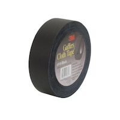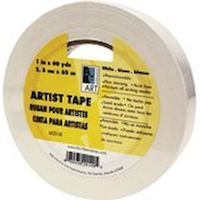
-
Microfiber cleaning cloths 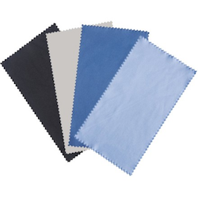
- External hard drives (may vary)
- AAA batteries for Profoto TTL Air Remote
- Carabiners, bungee cords, gear ties
- Colored background paper
Pre-capture preparation
- REVIEW ALL INSTRUCTION MANUALS AND DOCUMENTATION.
- Group items to be digitized by size to avoid adjusting camera and tripod too often during capture.
- Use a consistent, contrasting background behind materials. Ideally the background should differ in contrast to the actual materials and preferably should be black or white. This helps with auto-cropping.
- Determine whether materials will be shot with the camera horizontal or from above using the cantilevered center column on the tripod.
- Shoot in a space with dark walls and few windows.
Camera & lens setup
- Review the Camera and Lens manuals before beginning.
- Place camera and lens on a clean surface in a dust free room. a. Remove front and rear caps from lens b. Remove body cap from the camera. c. Use dust removal tool (“Rocket Air Blaster”) to clear any dust from the rear and front glass on the lens.
- Attach lens to the camera. Align the lens Aperture/mounting Index Line with the white Lens Mounting Mark on the camera body (see Nikon D810 manual diagram, page 2, item 11).
Example: 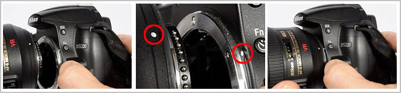 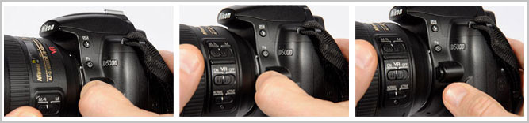
LENS SETTINGS
- The aperture on the lens should be set to the smallest setting (f/32 on the 60mm)
- Autofocus: Rotate the A-M mode ring on the lens while pressing the A-M mode ring release button, selecting A for autofocus.
CAMERA SETTINGS. Note: Review the camera manual, and especially pages 1-7 for help with adjusting and finding settings as well as getting to know the camera.
- ISO – 100 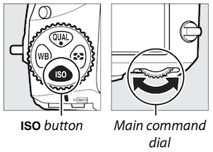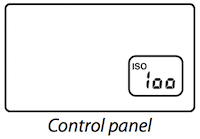
- Aperture – Set from f/8 to f/11. Stopping down, aka decreasing the size of the aperture, increases the depth of field (how much of the object’s depth, or distance from the camera, remains in focus). A narrower aperture can improve overall sharpness. 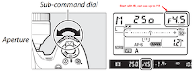
- Shutter speed – 1/60th of a second (or faster, such as 1/125th or 1/250th of a second; start at 1/60th and adjust when troubleshooting). Do not exceed 1/250th of a second when using the Off Camera Flash System. 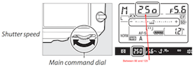
- White balance – 5000K or Flash (the lightning bolt symbol) 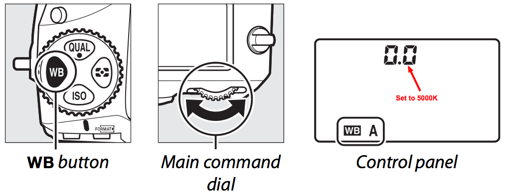
- Image format – shoot in RAW, not RAW + JPEG (derivatives are created after capture)
Set up tripod and camera
- Read the instructions for the tripod and tripod head, in order to understand their features and functionality.
- After extending the tripod legs to equal lengths and standing the tripod on a level, stable surface, attach the tripod head to tripod. This is accomplished by twisting the bottom of the tripod head onto the mount plate of the tripod.
- Release camera plate from tripod head. Screw the plate to the camera body, using a coin or a flat head screwdriver to tighten. Note: Look under tripod plate to see “LENS” indicator. “LENS” should be lined up/pointing toward the camera lens.
- Attach the camera to the tripod with the quick release tripod plate. Insert the “feet” on the plate first, then lower the camera and plate at an angle until the plate snaps into position. The quick release handle will snap away from you as the camera is set in place.
- Look through viewfinder and position tripod and camera to compose materials so that there is a small amount of extra space on all 4 sides. This allows for cropping in post processing. ⚠ NOTE: If you are using the center column of the tripod horizontally above your items, ENSURE that the tripod is securely weighted so the weight of the camera and tripod head do not cause it to tip over.
- Camera sensor is rectangular so adjust materials to fill maximum capture area. Sometimes you may have to turn the camera or the materials to fill the frame.
- Check that tripod is set up evenly based on level bubbles
- The camera and the materials should be as parallel as possible to avoid distortion
- Look through viewfinder to make sure materials look rectilinear, not trapezoidal
- Use the grid view in the viewfinder
- After image capture preview the image on the computer to confirm that the image is rectilinear and not trapezoidal
- Use tape to make marks on the the floor where tripod legs are positioned to maintain consistency in distance
- Attach carabiner to some sort of bag or weight and hook onto tripod (there’s a ring to hook onto) so that tripod is weighed down and stable
Lighting setup
Set up lights
- Read the instructions for the Profoto B2 250 Air Location Kit and the Air Remote TTL-N.
- Make sure battery is charged (Charger is included in kit. Battery is located on the bottom of the pack and can be removed to charge.)
- Set up light stands
- Stands are reverse stands. Maintain a wide base so that they don’t tip over
- When extending light stands, extend from the bottom first before using thinner extensions
- Use artist tape to mark stand positions. Set stands at 45 degree angles (see example) 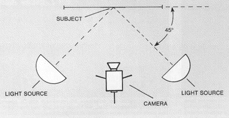
- Attach the flash heads to light stands, taking care to ensure that the flash head is directly above one leg of the stand, to minimize the risk of tipping. Tighten flash head to light stand securely.
- Build Softboxes by matching rod color to colors located on Speedrings (the blue dots).
- Be patient.
- The rods are meant to flex, but try not to force the rod too much.
- Start with one rod, then move to opposite rod. Once all rods are snapped in the Softbox should fully form a square
- Attach Softboxes to flash heads
- Shimmy flash heads into speedring, close down on Speedring clamp to secure.
- Check that lighting battery pack is turned off.
- Connect flash head cords to battery pack. Note: never plug in or unplug flash heads while battery pack is on
- Cords should plug in the then turn and lock
- Turn on battery pack
Battery Pack Settings
- Set flash power for each flash head to the same output on the lighting battery pack, start with “8” but may need to adjust based on test images
- Set channel on battery pack using the “Set” button. This will probably be set to “1”. Any channel is fine, but will need to match the channel in the TTL Flash Remote Setup in the next step. 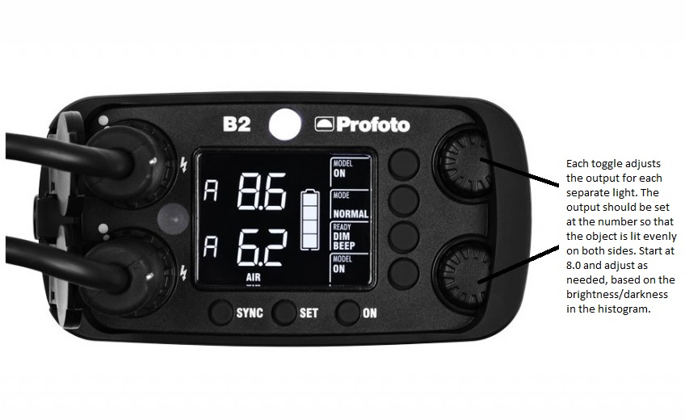
TTL Flash Remote Setup
- Attach wireless TTL flash remote to camera hot shoe, locking it into position by turning the lock ring at the base of the Air remote. Note: The hot shoe is the metal part on top of the camera body where the flash remote slides in and is mounted throughout capture, see photo below 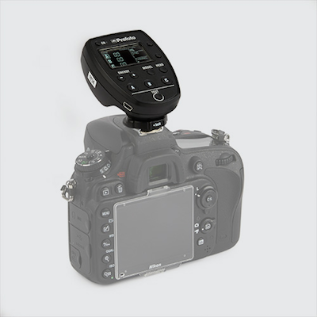
- Turn on flash remote using “ON” button
- Press “MODE” button on flash remote to set mode to “MAN” and not “TTL” in display 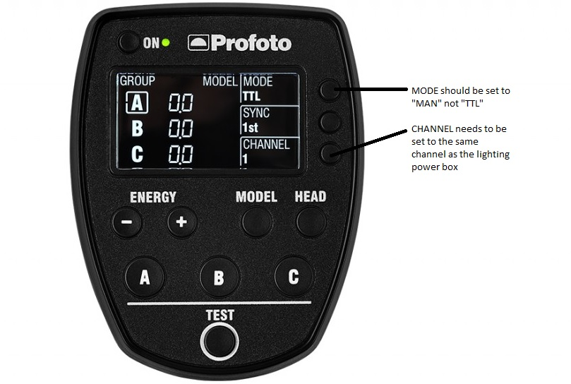
- Note: The flash remote sometimes goes to sleep when unused from a number of minutes, just turn flash remote back on and reset mode to “MAN”
Set Camera Focus
- Use viewfinder to look at materials and adjust focus as clear as possible
- Open live view on LCD display and zoom in on any text or distinguishing lines and adjust focus until they look as clear as possible. Note: You are not zooming the lens, ONLY the live view, in order to focus.
- Tape down focal ring so that focus does not change throughout capture, especially if shooting downward (focal rings tend to drift)
Attach shutter release cable
Note: Shutter release has a lock. Unlock before detaching. The shutter can be triggered with the computer when shooting tethered.
Open laptop and Lightroom
- Start up and log in to laptop
- Connect camera to laptop via USB3 tether cable
- Open Lightroom
- Create new catalog, name appropriately. Remember, this is a catalog in Lightroom, and it can contain multiple sessions.
Click File > Tethered Capture > Start Tethered Capture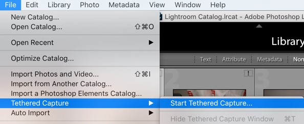 - Lightroom will automatically find the camera in use. A box should pop up that says Nikon D810 is in use
- Name the session you are in with a date (recommended), or collection name and session number
- Set up your file naming convention in the “Naming” section. You can choose one of the existing templates, then choose “Edit” from the Template pull-down menu to create a custom naming template. 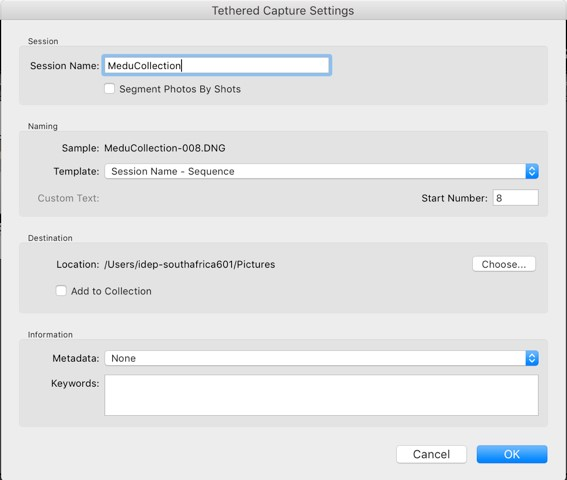
- Create new catalog, name appropriately. Remember, this is a catalog in Lightroom, and it can contain multiple sessions.
START CAPTURE
Test flash settings
- Take an image, ideally using the remote shutter release or button available in Lightroom so as not to create camera shake.
- Review image in Lightroom
- Zoom into the image – are things in focus?
- Look at Histogram – Is the image too dark or too light?
- Histogram should be evenly distributed without too much information skewing right or left, if the hills are too far to the right the image will appear darker than it should be. If hills are too far to the left the image will appear lighter than it should be.
- Adjusting the output in the battery pack may be needed at this point to either provide more or less light, depending on histogram. Adjust and troubleshoot until histogram looks evenly distributed.
Take a photo with color reference target
- Reference target photo should be taken at the beginning of the each session when the lighting conditions or exposure settings have changed or when the materials that are being shot are very different in size or type.
- Place the target directly on the surface of the object to be digitized.
- Reference target should be photographed straight on with the same lighting that will be used to illuminate the materials. Avoid shadows and do not obscure color swatches on target when holding target in front of materials.
Continue taking images and checking them in Lightroom
- Continually compare images to corresponding histogram to ensure evenly distributed light
- Keep an eye on battery levels on camera, lighting battery pack, laptop and flash remote
Post Capture Breakdown
- Never unplug flash heads from battery pack while battery pack is on
- Turn off battery pack and then discharge remaining power using white button on the top of battery pack
- Keep white portion of softboxes clean and white for maximum use
Post Capture Processing
During capture the images in Lightroom will be in a RAW format. The best way to implement post capture changes is to do so to the .RAW file. Once all changes/edits have been made the files can be exported in TIFF or JPEG making them more functional across applications.
Processing includes the following:
- Cropping/Skew
- For master images leave ⅛” around image
- Use functions in Lightroom or Photoshop to straighten image if necessary
- Color correction
- Use XRite Color Checker software and reference images to correct color and apply color profiles (see section about Installing XRite Color Checker)
- Creating derivatives
- Export master files in TIFF format, export other derivatives as needed
- Choose resolution to export at (300 - 600 ppi)
- Back up work
- It is recommended that work be mirrored on a hard drive when possible
- Exporting files to TIFF or JPEG format 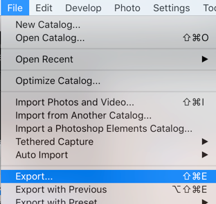 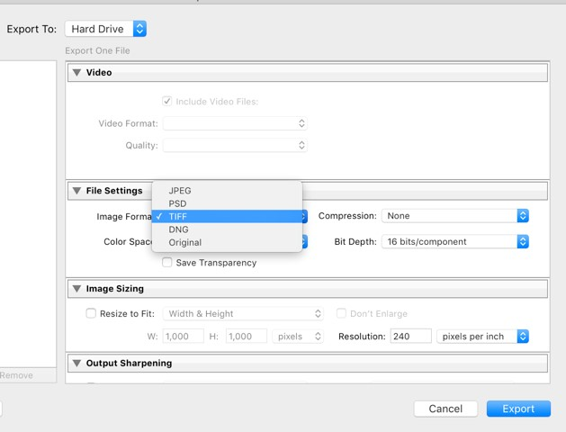
File Specifications at a Glance
- File format for master images: TIFF
- File format for derivatives: JPEG or PDF/PDFa
- Output resolution: 300 - 600ppi
- Bit depth: 8 bits per channel (24 bit total)
- Color: RGB highlights should not exceed 250 - 250 - 250, shadows no lower than 5 - 5 - 5, check histogram for this information
- Color space: sRGB or Adobe RGB 1998
Image Quality Control Tips
The following is a simplified list of quality control checkpoints to consider during and after digitization. Check for the following:
- Format - each image is in the correct format.
- Compression - files are compressed or left uncompressed per the project instructions
- Bit Depth - correct bit depth has been selected (check metadata in Lightroom)
- Resolution - 300 - 600 ppi, 400 ppi and up for OCR purposes (check metadata in Lightroom)
- Color - output color closely matches true color of the materials, correct color mode has been selected.
- Orientation - all images are oriented correctly, no distortion or proportion irregularities.
- No physical matter - no dirt, dust, etc. obstructing the view of the item.
- No digital artifacts - no glare, no lens flare etc.
- Page order - keep track of the page order while scanning and also check a sample size at the end of the scanning process.
- Cropping - images are properly cropped (default = 1/8 inch on all sides) or per the project instructions.
File Naming & Folder Structure
Best Practices
Well-organized structures and file names make it easier to keep track of your data. When naming and organizing files, you should be consistent and descriptive to make it possible to find specific data and know what the files contain and what their status is. Set up a clear directory structure that includes information like the project title, a date, and some type of unique identifier. Individual directories may be set up by date, researcher, experimental run, or whatever categories make the most sense for you and your research needs.
Structuring Data
Think carefully about how best to structure your data from the very earliest stages of your project. This is particularly important when you have a number of collaborators, or are planning on sharing your data. Think about whether you need a deep or shallow hierarchy. Aim for a shallow hierarchy.
Some examples of data structures include organization by:
- types of data (text, images, sound files, etc.)
- research activities (interviews, surveys, focus groups, etc.)
- material (data, documentation, publication, etc.)
File Naming
For file naming conventions, see the “File Naming & Organization” Guide: https://uclalibrary.github.io/ideptoolkit/filenaming.html
Other tips
Include in the directory a README.txt file that explains your naming format along with any abbreviations or codes you have used. This documentation will be helpful both during the project or experiment, and also in the future
Using XRITE Color Checker software to create a Digital Negative and Lightroom Color Profile
Note: Read Me documentation that comes with software provides step by step instructions.
- Insert disc
- Install software
- Using Lightroom, save image containing the Color Checker Passport in view as a .DNG
- Open the DNG reference image in Color Checker Passport software
- Software will automatically find color swatches
- Click “Create Profile” to save, name appropriately so that it can be recognized as a reference file
- Software will save as .DCP file (this is your color correction profile)
- Restart Lightroom to apply .DCP file
- Go to Develop mode in Lightroom
- In the side panel scroll down to Camera Calibration, in this window click the drop down menu next to “Profile”
- The profile you created should show up in that list, click to apply to the selected image or select all images that were shot under the same lighting condition as reference image and apply profile to all
- If the Color checker software is unavailable or unusable you can still use the color reference target to white balance the image
- Go to develop mode in Lightroom, under white balance click the eyedropper, use the eyedropper to select the white patch on the color reference target and it should adjust the white balance correctly